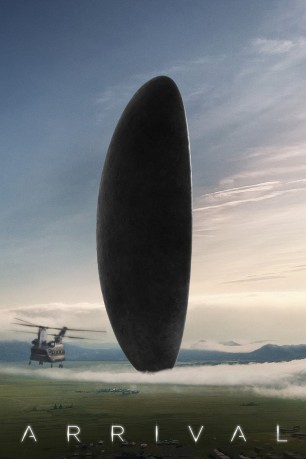
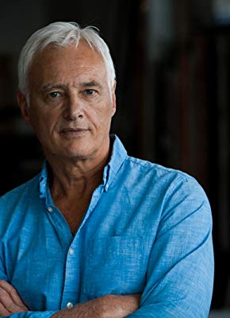

#5444 Arrival
Auszeichnungen: für 8 Oscars nominiert
 gesehen am 02.02.2017
gesehen am 02.02.2017
 
 IMDB-Wertung: 8.2 / 10
IMDB-Wertung: 8.2 / 10  Tomatometer: 94
Tomatometer: 94  Metascore: 0
Metascore: 0 
Zwölf Alien-Raumschiffe landen auf der Erde in unterschiedlichen Regionen. Die Menschen versuchen mit den Außerirdischen zu kommunizieren, aber niemand versteht die walartigen Laute, die von den Aliens abgesondert werden. Im Auftrag der US-Regierung stellt Colonel Weber darum ein Team um die Linguistin Louise Banks und den Physiker Ian Donnelly zusammen, das eine Kommunikation mit den fremden Wesen herstellen soll, um deren Absichten in Erfahrung zu bringen. In Montana, wo eines der Schiffe über dem Boden schwebt, machen sich die beiden an die Arbeit – er, der rationale Naturwissenschaftler mit klarer Ansicht zu den Dingen, sie mit ihrem Sprachverständnis und ihrer ansteckenden Entdeckungsfreude. Doch bald beginnt ein Rennen gegen die Zeit, bei dem es um nicht weniger als den Fortbestand der Menschheit geht…
Jahr: 2016
Dauer: 116 Minuten
FSK: 12
Land: USA Studio: Paramount PicturesTonspuren: DTS - ,
Untertitel: Deutsch, Englisch,
Auflösung: 1080p (1920x804) Größe: 6993 MB
Genre: Thriller, Drama, Sci-Fi, Mystery
Regisseur: Denis Villeneuve
Drehbuch: Andrew Niccol
Soundtrack:
Darsteller:
 Amy Adams als Louise Banks
Amy Adams als Louise Banks Jeremy Renner als Ian Donnelly
Jeremy Renner als Ian Donnelly Forest Whitaker als Colonel Weber
Forest Whitaker als Colonel Weber Michael Stuhlbarg als Agent Halpern
Michael Stuhlbarg als Agent Halpern Mark O'Brien als Captain Marks
Mark O'Brien als Captain Marks Tzi Ma als General Shang
Tzi Ma als General Shang- Abigail Pniowsky als 8-Year-Old-Hannah
- Julia Scarlett Dan als 12-Year-Old-Hannah
- Jadyn Malone als 6-Year-Old-Hannah
- Christian Jadah als Private Combs
 Andrew Shaver als Environmental Tech
Andrew Shaver als Environmental Tech- Pat Kiely als Environmental Tech
 Mark Camacho als Richard Riley
Mark Camacho als Richard Riley- Sabrina Reeves als Press Secretary
- Julian Casey als Australian Scientist
 Larry Day als CIA Officer Dan Ryder
Larry Day als CIA Officer Dan Ryder- Matthew Willson als Preacher
- Ruth Chiang als Chinese Scientist
 Russell Yuen als Chinese Scientist
Russell Yuen als Chinese Scientist- Anana Rydvald als Danish Scientist
- Bineyam Girma als Sudan Representative
 Abdul Ayoola als Sierra Leone Representative
Abdul Ayoola als Sierra Leone Representative- Albert Kwan als Chinese Man
 Joe Cobden als Cryptographer
Joe Cobden als Cryptographer- Genevieve Sirois als Cryptographer
- Victor Andres Turgeon-Trelles als Science Team Member
- Kathleen Stavert als Communications Ops
- Leisa Reid als Nurse
- John Sanford Moore als TV Anchor
- Sangita Patel als TV Anchor
- Max Walker als TV Anchor
 Karen Belfo als Skype CIA Agent , uncredited
Karen Belfo als Skype CIA Agent , uncredited- Chloë Bellande als MIT College girl , uncredited
- Frank Fiola als Soldier , uncredited
- Carmela Nossa Guizzo als Hannah, 4 yrs. old , uncredited
 Mustafa Haidari als Foreign Correspondent , uncredited
Mustafa Haidari als Foreign Correspondent , uncredited Philippe Hartmann als Halpern's Deputy Director , uncredited
Philippe Hartmann als Halpern's Deputy Director , uncredited- Laurean Adrian Parau als US Army Major , uncredited
-  Frank Schorpion als Dr. Kettler
- Lucas Chartier-Dessert als Private Lasky
- Lucy Van Oldenbarneveld als CNAC Anchor
- Sonia Vigneault als Dr. J. Bydwell
- Tony Robinow als British Scientist
- Sergiy Marchenko als Russian Officer
- Abdelghafour Elaaziz als African Representative
- Alex M. Yeuh als Japanese Minister
- Daniel Esteban als Venezuelan Representative
- Brittany Teo als Grad Student with Smartphone
- Lorne Brass als Cryptographer
- Michael Nangreaves als Science Team Member
Datei: X:\2016(A-F)\Arrival (2016, FSK12, 1920x804).mkv seit 01.02.2017
Festplatte: HD 2016(A-Z)
 Es gibt insgesamt 147 Filme in der Gruppe '2016(A-F)'
Es gibt insgesamt 147 Filme in der Gruppe '2016(A-F)'